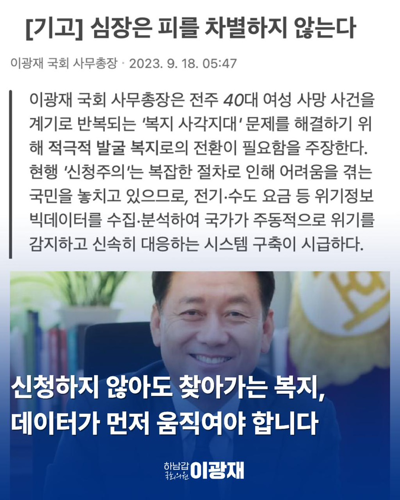
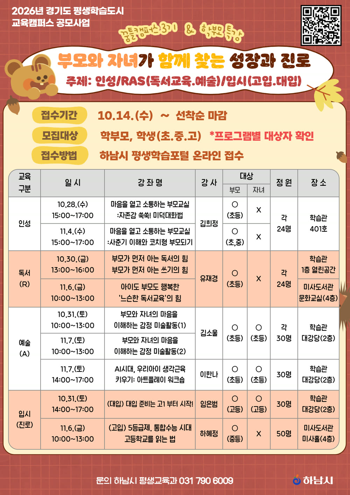
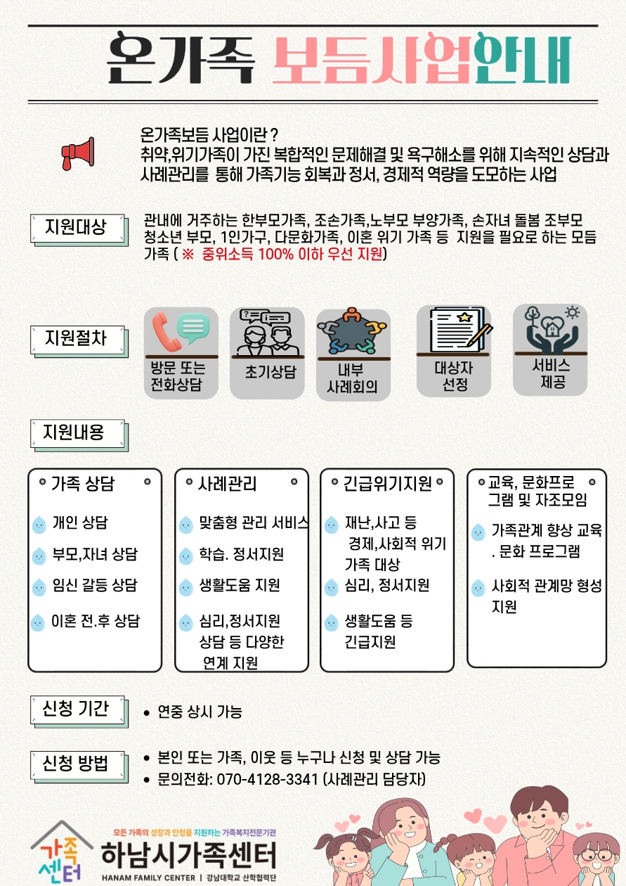
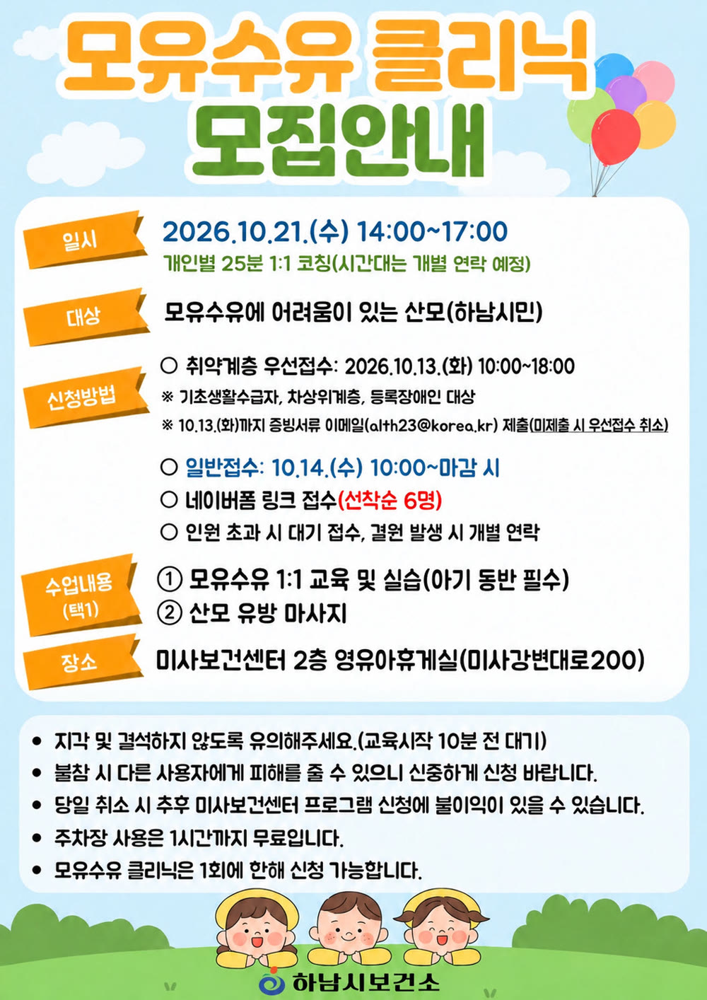

57호 | 2026년 10월 14일 발행
📌 이번 호 주요 목차
 우리동네 국회의원 이광재
우리동네 국회의원 이광재
📝 현장일지
이광재의원, "창우초·신평중에 새 창문이 들어옵니다" 교육부 특별교부금 8억 3,600만 원 확보
• 교육부 특별교부금 8억 3,600만 원 확보, 창우초·신평중 복도 창문 교체
• 겨울 찬바람과 바깥 소음을 막아 아이들이 하루 대부분을 보내는 교실·복도 환경 개선
• 공사가 수업에 지장을 주지 않도록 교육청과 협의 예정
• 학교 일로 광주까지 오가는 수고를 덜도록 하남교육지원청 설치를 경기도교육청과 협의 중
• "하남 학교 문제는 하남에서 바로 푸는 게 맞습니다"
• 겨울 찬바람과 바깥 소음을 막아 아이들이 하루 대부분을 보내는 교실·복도 환경 개선
• 공사가 수업에 지장을 주지 않도록 교육청과 협의 예정
• 학교 일로 광주까지 오가는 수고를 덜도록 하남교육지원청 설치를 경기도교육청과 협의 중
• "하남 학교 문제는 하남에서 바로 푸는 게 맞습니다"
📌 출처: 이광재 공식 네이버 블로그
📝 현장일지
이광재의원 "신청하지 않아도 찾아가는 복지, 데이터가 먼저 움직여야 합니다"
• 국무회의 '신청주의에서 자동 지원 복지로 전환' 발언에 전적으로 동의
• 송파 세 모녀 등 복지 신청조차 못 한 채 벌어진 비극 반복 지적
• 실시간 소득파악으로 2024년 일용직·프리랜서 등 약 783만 명 소득이 월 단위로 국세청에 집계
• '신청주의 개선 6법' 국회 통과·국무회의 의결, 소득이 갑자기 끊긴 위기가구를 국세청 데이터로 먼저 찾아야
• "신청하면 늦습니다. 먼저 알고 먼저 찾아가는 복지가 필요합니다"
• 송파 세 모녀 등 복지 신청조차 못 한 채 벌어진 비극 반복 지적
• 실시간 소득파악으로 2024년 일용직·프리랜서 등 약 783만 명 소득이 월 단위로 국세청에 집계
• '신청주의 개선 6법' 국회 통과·국무회의 의결, 소득이 갑자기 끊긴 위기가구를 국세청 데이터로 먼저 찾아야
• "신청하면 늦습니다. 먼저 알고 먼저 찾아가는 복지가 필요합니다"

📌 출처: 이광재 공식 네이버 블로그
📰 언론보도
[신아일보] 이광재의원, 하남 창우초·신평중 노후 창호 교체 예산 8억 3,600만 원 확보
이광재 의원이 교육부 특별교부금 8억 3,600만 원을 확보해 창우초 복도창(3억 9,300만 원)과 신평중 복도중창(4억 4,300만 원)을 교체합니다. 각각 1994년과 2005년에 지어진 두 학교는 그동안 난방 효율 저하와 창문 개폐 불량을 겪어 왔으며, 이번 사업으로 학생 1,109명의 교육환경이 나아질 전망입니다. 지난 6월 한국애니메이션고 천장 교체 예산까지 더하면 당선 이후 확보한 하남 학교 시설 개선 예산은 총 16억 4,400만 원입니다.
📌 출처: 신아일보 (김두평 기자)
📰 언론보도
[세정일보] 이광재의원 "땀 흘려 일한 근로소득에 인센티브 있어야… 상속공제 5억 원 현실화 필요"
이광재 의원은 13일 국세청 국정감사에서 29년 가까이 그대로인 상속세 일괄공제·배우자 상속공제(각 5억 원)의 현실화와 소득세 물가연동제 검토를 요청했습니다. 연봉 5,000만 원 근로자는 소득세와 4대 보험료로 약 790만 원을 내지만 자산소득 과세는 상대적으로 가볍다며 근로소득 인센티브 확대를 주문했고, 스톡옵션 과세 개선과 조세전문법원 도입도 제안했습니다. 임광현 국세청장은 "검토해 볼 시기가 됐다"고 답했습니다.
📌 출처: 세정일보
📰 하남 지역 주요 뉴스
🎤 문화/관광
하남시 홍보대사 피프티피프티, '하남이 처음입니다'로 동네서점부터 검단산 정심사까지 하남 여행
지난 4월 하남시 홍보대사로 위촉된 걸그룹 피프티피프티(FIFTY FIFTY)가 유튜브 콘텐츠 '하남이 처음입니다'로 하남의 매력을 알리고 있습니다. 9월 말부터 지난 12일까지 3회에 걸쳐 공개된 영상에서 멤버들은 서울에서 지하철을 타고 하남을 찾아 동네서점과 그로서리 스토어, 빈티지 숍 등 동네 감성이 묻어나는 곳을 둘러보고 지역 행사도 직접 체험했습니다. 검단산에 자리한 사찰 '정심사'에서는 고즈넉한 분위기 속에 템플스테이로 휴식을 취하는 모습도 담겼습니다. 피프티피프티는 앞서 '스테이지 하남', '2026 하남뮤직페스티벌 <뮤직 人 The 하남>' 무대에도 올랐으며, 앞으로도 다양한 활동으로 하남을 알릴 예정입니다.
📌 출처: 스포츠경향
🏛️ 시정/의회
하남시 지난해 세입결산 1조 3,708억 원… 시의회 제353회 정례회서 결산 심사 돌입 (~27일)
하남시의회가 13일 개회한 제353회 정례회 제1차 본회의에서 하남시의 2025회계연도 결산 승인안 제안 설명을 듣고 본격적인 심사에 들어갔습니다. 시가 제출한 자료에 따르면 지난해 일반회계와 특별회계를 합한 예산 현액은 약 1조 3,627억 원이며, 실제로 들어온 세입결산액은 약 1조 3,708억 원, 쓰인 세출결산액은 약 1조 2,223억 원입니다. 세입에서 세출을 뺀 결산상 잉여금은 약 1,486억 원이고, 이 가운데 다음 연도 이월액과 보조금 반납금 등을 제외한 순세계잉여금은 약 489억 원입니다. 이번 정례회는 10월 13일부터 27일까지 15일간 열리며, 시의회는 이 기간 결산 승인안을 심사합니다.
📌 출처: 서울경제TV (김권수 기자)
🩺 보건/복지
하남시보건소, 대한임상병리사협회 경기도회와 '맞손'… 경로당 찾아가는 건강관리에 임상병리사 참여
하남시보건소가 지난 12일 미사보건센터에서 대한임상병리사협회 경기도회와 지역보건 의료사업 협력 강화를 위한 업무협약을 맺었습니다. 두 기관은 ▲지역보건 의료사업 활성화를 위한 상호 협력 ▲보건소 사업에 임상병리사 참여 및 연계 ▲주민 건강증진을 위한 보건의료 자원·정보 교류에 힘을 모으기로 했습니다. 특히 경로당 등 시민들이 일상적으로 이용하는 곳을 찾아가는 방문 건강관리 사업에 협회 소속 임상병리사가 함께해 현장 중심의 서비스를 강화할 계획입니다. 박강용 하남시 보건소장은 "지역의 전문 보건의료 자원을 연계해 시민들에게 보다 체계적인 건강관리 서비스를 제공하겠다"고 밝혔습니다.
📌 출처: 기호일보 (이홍재 기자)
💬 하남 맘카페 HOT 이슈
이번 주 하남 지역 맘카페(미사맘스클럽, 아이품애, 정다운 감일맘, 교산우리동네 등)에서 많이 오르내린 HOT 이슈 TOP 3입니다.
1️⃣ [나눔] "작아진 옷·장난감, 어디에 보낼까요?"… 덕풍천 알뜰장터 후기에 기부·드림 문의 이어져
현황: 교산 지역 카페에는 주말에 아이 자전거를 태우러 덕풍천에 나갔다가 알뜰장터를 우연히 만났다는 후기가 올라왔습니다. 동네 주민들이 돗자리를 깔고 아이 옷과 책, 장난감을 팔았는데 생각보다 규모가 컸고, 초등학생 형제가 직접 딱지를 팔며 손님을 부르는 모습이 귀여워 500원에 하나 샀다는 이야기, 거의 새것인 겨울 내복 두 벌을 건졌다는 이야기도 담겼습니다. 감일맘 카페에는 깨끗한 아이 옷을 기부할 곳을 묻는 글이, 미사맘스클럽에는 5세 아이 장난감을 정리하려는 글과 어린이 구명조끼를 이웃에게 무료로 나눴다는 드림 글도 올라왔습니다.
💡 주민 포인트: 덕풍천 알뜰장터가 정기적으로 열리는지는 아직 확인되지 않았으니 참여하려면 관할 행정복지센터에 먼저 문의해 보세요. 아이 옷과 장난감은 아름다운가게·굿윌스토어 같은 기부 매장이나 동네 카페 '드림' 게시판으로 나눌 수 있습니다.
💬 주민 반응: 후기를 올린 주민은 다음엔 아이들의 작아진 옷을 들고 나가 보고 싶다며 장터가 정기적으로 열리는지 이웃들에게 물었고, 버리기엔 아까운 물건을 이웃과 나누자는 글이 이어졌습니다.
📌 출처: 네이버 카페 (교산우리동네, 정다운 감일맘, 미사강변도시 미사맘스클럽)
2️⃣ [생활] "아침 8시면 역 앞 자전거 거치대가 꽉 차요"… 자전거 타기 좋은 가을, 거치대 부족·분실·도로 안전 문의 잇따라
현황: 교산 지역 카페에는 아침 8시만 넘으면 역 앞 자전거 거치대가 가득 차 근처 난간에 묶어 두는데 단속 대상인지 묻고, 거치대를 늘려 달라는 글이 올라왔습니다. 아이품애 카페에는 아이가 18단지에 며칠 두고 온 자전거가 사라졌다며 보거나 습득한 분을 찾는 글이 올라왔고, 자전거 동호회 카페에는 하남시 자전거 길에 맨홀 뚜껑이 없어 임시로 가려 놓은 곳이 있으니 조심하라는 글도 공유됐습니다. 한편 날씨가 좋아 경정공원에서 자전거를 탔다는 인증 글과, 자전거로 두물머리까지 가 보는 게 버킷리스트라며 난이도와 소요 시간을 묻는 글도 이어졌습니다.
💡 주민 포인트: 난간이나 보도에 오래 묶어 둔 자전거는 방치 자전거로 분류돼 수거될 수 있으니 주의하세요. 자전거 길의 파손·위험 시설은 '안전신문고' 앱으로 신고할 수 있고, 아이 자전거는 사진과 차대번호를 미리 찍어 두면 분실했을 때 찾는 데 도움이 됩니다.
💬 주민 반응: 출퇴근 시간대 거치대를 늘려 달라는 바람과 함께, 가족이 함께 탈 만한 가을 자전거 코스를 서로 묻는 글이 이어졌습니다.
📌 출처: 네이버 카페 (교산우리동네, 아이품애, 하남맘 모여라, 자출사)
3️⃣ [나들이] "핑크뮬리·코스모스 보러 경정공원 왔어요"… 가을 산책 명소 인증 속 "BBQ 페스티벌 또 안 하나요?"
현황: 미사맘스클럽에는 미사 경정공원 조정경기장 쪽에 핑크뮬리와 코스모스가 피어 가족 나들이객이 많다는 인증 글이 연이어 올라왔습니다. 오른쪽 입구 쪽에 꽃밭이 있고 주차와 화장실 이용도 편해 돗자리와 도시락을 챙겨 오면 좋다는 후기, 자전거를 타고 나와 커피 한잔 들고 산책하기 딱 좋은 날씨라는 글도 공유됐습니다. 3년 전 경정공원에서 열린 BBQ 페스티벌이 아직도 아이들 기억에 남는다며 비슷한 행사 계획이 있는지 묻는 글도 눈길을 끌었습니다.
💡 주민 포인트: 주말 낮에는 주차장이 붐비니 오전 일찍 가거나 자전거·대중교통 이용을 추천합니다. 하남시민 차량 주차 할인은 출차 전 등록 여부와 영수증을 꼭 확인하세요.
💬 주민 반응: "가을가을한 날씨에 산책하기 최고"라는 반응과 함께, 경정공원에서 가족 축제가 다시 열리면 좋겠다는 바람이 많았습니다.
📌 출처: 네이버 카페 (미사강변도시 미사맘스클럽)
🎭 ALL IN 하남라이프
2026년 10월 14일 기준 한눈에 보는 하남시 최신 문화·행사·교육 안내 가이드
🌱 10.14(수)~ 선착순 | 학부모·초중고 학생
꿈틀캠퍼스 3기 '부모와 자녀가 함께 찾는 성장과 진로' 수강생 모집 (하남시평생학습관)
"인성·독서·예술·입시까지, 부모와 아이가 함께 배우는 가을 특강"
경기도 평생학습도시 교육캠퍼스 공모사업으로 운영하는 꿈틀캠퍼스 3기와 학부모 특강입니다. 프로그램별로 대상(부모/자녀, 학년)이 다르니 확인 후 신청하세요.
📝 접수: 10월 14일(수)부터 선착순 마감, 하남시 평생학습포털 온라인 접수
🧡 인성: 10.28(수)·11.4(수) 15:00~17:00 '마음을 열고 소통하는 부모교실' (부모, 각 24명)
📚 독서: 10.30(금) 13:00~16:00 '부모가 먼저 아는 독서·쓰기의 힘', 11.6(금) 10:00~13:00 '느슨한 독서교육의 힘' (초등 부모)
🎨 예술: 10.31(토)·11.7(토) 10:00~13:00 부모·자녀 감정 미술활동, 11.7(토) 14:00~17:00 AI시대 아트플레이 워크숍 (초등 부모+자녀)
🎓 입시: 10.31(토) 14:00~17:00 '대입 준비는 고1부터' (고등 부모+자녀), 11.6(금) 10:00~13:00 '5등급제·통합수능 시대 고등학교 읽는 법' (중등 부모)
📍 장소: 하남시평생학습관, 미사도서관 (강좌별 상이)
☎️ 문의: 하남시 평생교육과 031-790-6009
경기도 평생학습도시 교육캠퍼스 공모사업으로 운영하는 꿈틀캠퍼스 3기와 학부모 특강입니다. 프로그램별로 대상(부모/자녀, 학년)이 다르니 확인 후 신청하세요.
📝 접수: 10월 14일(수)부터 선착순 마감, 하남시 평생학습포털 온라인 접수
🧡 인성: 10.28(수)·11.4(수) 15:00~17:00 '마음을 열고 소통하는 부모교실' (부모, 각 24명)
📚 독서: 10.30(금) 13:00~16:00 '부모가 먼저 아는 독서·쓰기의 힘', 11.6(금) 10:00~13:00 '느슨한 독서교육의 힘' (초등 부모)
🎨 예술: 10.31(토)·11.7(토) 10:00~13:00 부모·자녀 감정 미술활동, 11.7(토) 14:00~17:00 AI시대 아트플레이 워크숍 (초등 부모+자녀)
🎓 입시: 10.31(토) 14:00~17:00 '대입 준비는 고1부터' (고등 부모+자녀), 11.6(금) 10:00~13:00 '5등급제·통합수능 시대 고등학교 읽는 법' (중등 부모)
📍 장소: 하남시평생학습관, 미사도서관 (강좌별 상이)
☎️ 문의: 하남시 평생교육과 031-790-6009

📌 출처: 하남시평생학습관
🧘 10.19~10.29 접수 | 60세 이상 20명 · 추첨
시니어 헬스센터 '바른자세 스트레칭 운동교실 5기' 참가자 모집 (하남시보건소)
"소도구로 유연하게, 코어 근육은 튼튼하게"
하남시보건소 시니어 헬스센터가 어르신을 위한 스트레칭 운동교실 5기 참가자를 모집합니다.
📝 접수: 10월 19일(월) 09:00 ~ 10월 29일(목) 18:00 (점심시간 12:00~13:00 제외)
👥 대상: 60세 이상 하남시민 20명
✅ 방법: 시니어 헬스센터 방문 또는 전화 접수 후 추첨 (마감 다음 날 컴퓨터 추첨, 문자 안내 / 신분증 지참)
🗓 일정: 11월 4일(수) ~ 12월 11일(금) 매주 수·금 14:30~15:30 (총 12회)
🤸 내용: 소도구 4종을 활용한 유연성 향상, 코어 근육 강화, 전신 혈액순환 촉진 운동
📍 장소: 시니어 헬스센터 교육실 (역말로 71, 덕풍스포츠문화센터 2층)
☎️ 문의: 031-5182-1640
하남시보건소 시니어 헬스센터가 어르신을 위한 스트레칭 운동교실 5기 참가자를 모집합니다.
📝 접수: 10월 19일(월) 09:00 ~ 10월 29일(목) 18:00 (점심시간 12:00~13:00 제외)
👥 대상: 60세 이상 하남시민 20명
✅ 방법: 시니어 헬스센터 방문 또는 전화 접수 후 추첨 (마감 다음 날 컴퓨터 추첨, 문자 안내 / 신분증 지참)
🗓 일정: 11월 4일(수) ~ 12월 11일(금) 매주 수·금 14:30~15:30 (총 12회)
🤸 내용: 소도구 4종을 활용한 유연성 향상, 코어 근육 강화, 전신 혈액순환 촉진 운동
📍 장소: 시니어 헬스센터 교육실 (역말로 71, 덕풍스포츠문화센터 2층)
☎️ 문의: 031-5182-1640
📌 출처: 하남시보건소 (시니어 헬스센터)
🏛️ 공공기관 소식지
2026년 10월 14일 기준 하남시 공공기관 주요 공고·신청 안내입니다.
🤝 하남시가족센터 | 연중 상시 신청 · 무료
온가족보듬사업 사례관리 — 어려움을 겪는 가족을 위한 맞춤 상담·지원
"혼자 버티지 마세요, 가족센터가 함께 풀어갑니다"
취약·위기가족이 겪는 복합적인 문제를 꾸준한 상담과 사례관리로 함께 해결하고, 가족 기능 회복과 정서·경제적 자립을 돕는 사업입니다.
👥 대상: 하남시에 사는 한부모·조손·노부모 부양·손자녀 돌봄 조부모·청소년 부모·1인가구·다문화·이혼 위기 가족 등 지원이 필요한 모든 가족 (중위소득 100% 이하 우선 지원)
🧩 지원 내용: 개인·부모자녀·이혼 전후 가족 상담 / 맞춤형 사례관리(학습·정서·생활도움) / 재난·사고 등 위기가족 긴급지원 / 가족관계 향상 교육·문화 프로그램과 자조모임
🔄 절차: 방문 또는 전화 상담 → 초기상담 → 내부 사례회의 → 대상자 선정 → 서비스 제공
📝 신청: 연중 상시 가능 — 본인은 물론 가족·이웃 누구나 신청·상담할 수 있습니다
💰 비용: 무료
☎️ 문의: 사례관리 담당자 070-4128-3341 / 070-4128-3392
취약·위기가족이 겪는 복합적인 문제를 꾸준한 상담과 사례관리로 함께 해결하고, 가족 기능 회복과 정서·경제적 자립을 돕는 사업입니다.
👥 대상: 하남시에 사는 한부모·조손·노부모 부양·손자녀 돌봄 조부모·청소년 부모·1인가구·다문화·이혼 위기 가족 등 지원이 필요한 모든 가족 (중위소득 100% 이하 우선 지원)
🧩 지원 내용: 개인·부모자녀·이혼 전후 가족 상담 / 맞춤형 사례관리(학습·정서·생활도움) / 재난·사고 등 위기가족 긴급지원 / 가족관계 향상 교육·문화 프로그램과 자조모임
🔄 절차: 방문 또는 전화 상담 → 초기상담 → 내부 사례회의 → 대상자 선정 → 서비스 제공
📝 신청: 연중 상시 가능 — 본인은 물론 가족·이웃 누구나 신청·상담할 수 있습니다
💰 비용: 무료
☎️ 문의: 사례관리 담당자 070-4128-3341 / 070-4128-3392

📌 출처: 하남시가족센터
🤱 미사보건센터 | 산모 6명 · 선착순
10월 하남시보건소 모유수유 클리닉 참가자 모집 — 오늘(14일) 10시부터 일반 접수
"모유수유가 어려운 엄마를 위한 1:1 코칭"
미사보건센터 모자보건실이 모유수유에 어려움을 겪는 산모를 대상으로 1:1 맞춤 코칭을 진행합니다.
👥 대상: 모유수유에 어려움이 있는 하남시민 산모 (선착순 6명)
🗓 일시: 10월 21일(수) 14:00~17:00 (1인당 25분, 개인별 시간은 선정 후 안내)
📝 일반 접수: 10월 14일(수) 10:00 ~ 마감 시 (네이버폼 신청)
📍 장소: 미사보건센터 2층 영유아휴게실 (미사강변대로 200)
📢 선정 발표: 10월 15일(목) 개별 안내
☎️ 문의: 미사보건센터 모자보건팀 031-790-6552
미사보건센터 모자보건실이 모유수유에 어려움을 겪는 산모를 대상으로 1:1 맞춤 코칭을 진행합니다.
👥 대상: 모유수유에 어려움이 있는 하남시민 산모 (선착순 6명)
🗓 일시: 10월 21일(수) 14:00~17:00 (1인당 25분, 개인별 시간은 선정 후 안내)
📝 일반 접수: 10월 14일(수) 10:00 ~ 마감 시 (네이버폼 신청)
📍 장소: 미사보건센터 2층 영유아휴게실 (미사강변대로 200)
📢 선정 발표: 10월 15일(목) 개별 안내
☎️ 문의: 미사보건센터 모자보건팀 031-790-6552

📌 출처: 하남시보건소 (미사보건센터)
🚶 덕풍2동 | 10.31(토) · 무료 · 중식 제공
2026년 덕풍2동 체육대회 '덕풍골 둘레길 걷기' 개최 안내
"가을 둘레길, 이웃과 함께 걸어요"
덕풍2동 체육회가 주민 화합을 위한 체육대회로 덕풍골 둘레길 걷기 행사를 엽니다. 주민 여러분의 많은 참여를 바랍니다.
🗓 일시: 2026년 10월 31일(토) 09:00~
📍 집결지: 덕풍초등학교 운동장
🥾 코스: 덕풍초등학교 → 덕풍골 둘레길 → 위례교(반환점) → 덕풍초등학교
💰 참가비: 무료 (참가자 중식 제공)
📝 접수: 온라인(QR코드) 또는 덕풍2동 행정복지센터 방문 신청
🏃 주관: 덕풍2동 체육회
덕풍2동 체육회가 주민 화합을 위한 체육대회로 덕풍골 둘레길 걷기 행사를 엽니다. 주민 여러분의 많은 참여를 바랍니다.
🗓 일시: 2026년 10월 31일(토) 09:00~
📍 집결지: 덕풍초등학교 운동장
🥾 코스: 덕풍초등학교 → 덕풍골 둘레길 → 위례교(반환점) → 덕풍초등학교
💰 참가비: 무료 (참가자 중식 제공)
📝 접수: 온라인(QR코드) 또는 덕풍2동 행정복지센터 방문 신청
🏃 주관: 덕풍2동 체육회
📌 출처: 덕풍2동 행정복지센터
© 2026 우리동네 진짜일꾼 이광재